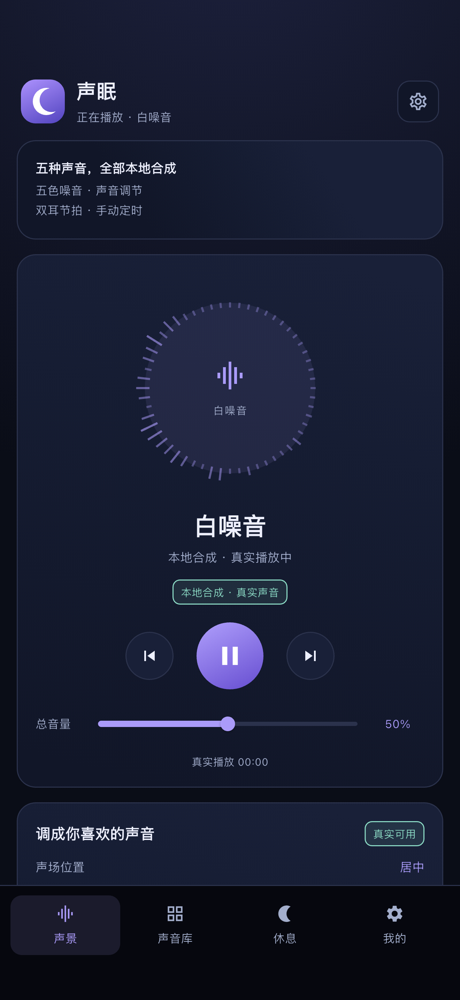
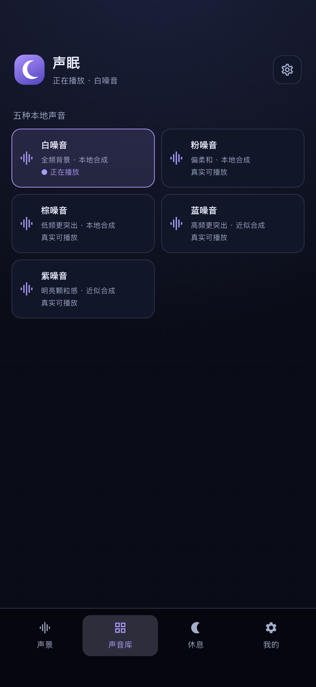
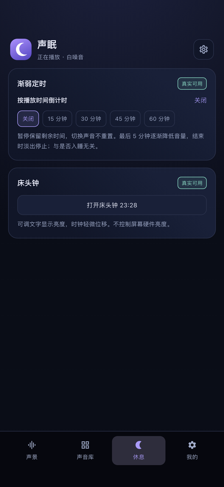
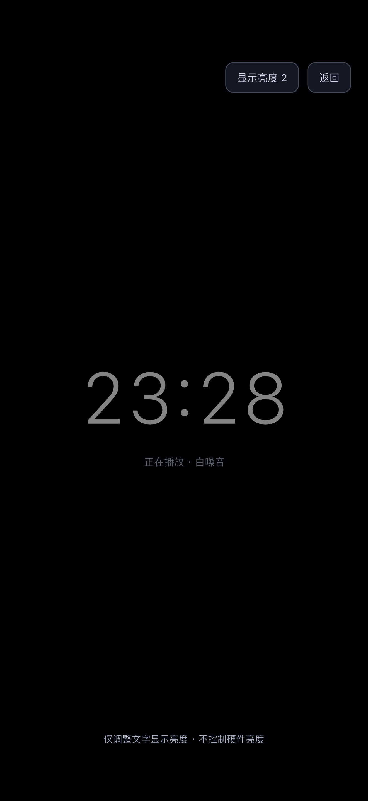
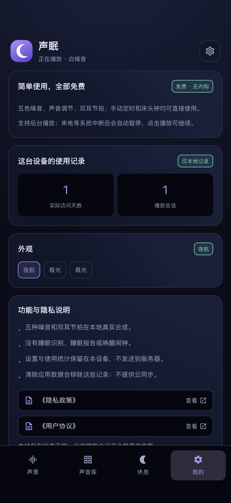

White
白噪音
全频背景，均匀盖住环境杂音，是最经典的入睡选择。
● 全频背景 · 本地合成
白 / 粉 / 棕 / 蓝 / 紫五种噪音，全部在你的设备上实时合成；叠加双耳节拍，设一个渐弱定时，再用床头钟陪你入睡。不联网、不申请权限、无广告、无内购。
它们都不是音频文件：每一种噪音都在设备上逐个采样实时合成，再无缝循环播放——不会出现接缝杂音，也永远不需要下载任何素材。
全频背景，均匀盖住环境杂音，是最经典的入睡选择。
高频更柔和，长时间听不刺耳；采用 Paul Kellet 近似算法生成。
低频更突出，声音更沉，适合盖住马路与低频轰鸣。
高频更突出，清爽明亮，白天听更通透。
颗粒感更细，层次更亮。
每种噪音约 5 秒循环，结尾与开头做了交叉淡化——你永远听不到循环点在哪。
四个滑杆实时作用于正在播放的噪音——不需要重载，也不用等待。
左 / 右连续可调——声音摆在枕头的哪一边，由你决定。
以 0.09 Hz 的缓慢起伏调制音量，让噪音轻轻呼吸，而不是机械地循环。
通过播放速率微调高低，±6 半音共 12 档。
一个滑杆同时控制当前噪音与双耳节拍两层声音。
200 Hz 载波分别送入左右耳，频率只差一点点——大脑会把这点差异“听”成第三种轻微的节拍，而底下的噪音照常播放。
按真实播放时间倒计时的渐弱定时，以及一块可以接管床头柜的床头钟。
15 / 30 / 45 / 60 分钟可选。倒计时只按真实播放时间进行——暂停保留剩余时间，切换声音不重置。最后 5 分钟音量逐渐降低，结束时淡出停止。
全屏大字细体时钟，三档文字亮度可调；每 96 秒轻微位移，长时间显示不易留下残影，同时显示当前正在播放的声音。
锁屏或切到其他应用，声音继续播放；来电等系统中断会自动暂停，点击播放即可继续。
环形可视化读取的是真实 FFT 频谱——56 根径向条，外加一个缓慢的呼吸光晕。
访问天数与播放会话只统计在本机——记录你为安静片刻按下播放的次数。
夜航 / 极光 / 晨光——在「我的 → 外观」切换，整个界面（包括频谱）都会跟着换。
声景 / 声音库 / 休息 / 床头钟 / 我的，均为真实截图，左右滑动查看。





不需要。所有噪音都在设备上实时合成，飞行模式照常使用，也从不需要下载任何音频文件。
不会。没有账号系统、没有埋点、没有广告 SDK，也没有任何网络请求。设置、外观与使用统计都只保存在设备本地。
节拍藏在两只耳朵的差异里：左耳 200 Hz 载波，右耳 202 / 205 / 210 Hz。必须佩戴立体声耳机——普通外放会把两个声道混在一起。若设备不支持立体声声像，应用会提示并关闭该功能。
不能，而且它从不假装可以。声眠是一个带定时功能的声音播放工具——不含睡眠识别、睡眠报告或唤醒闹钟。双耳节拍只是声音叠加功能，不代表任何生理状态，也不构成医疗或健康建议。
不会。倒计时按真实播放时间进行——暂停保留剩余时间，切换声音不重置。最后 5 分钟音量逐渐降低，结束时全部声音平滑淡出。
iPhone（iOS 13.0 或更高），另有同一套代码构建的 Web 调试版本。界面跟随系统语言：简体中文 / 繁體中文 / English。